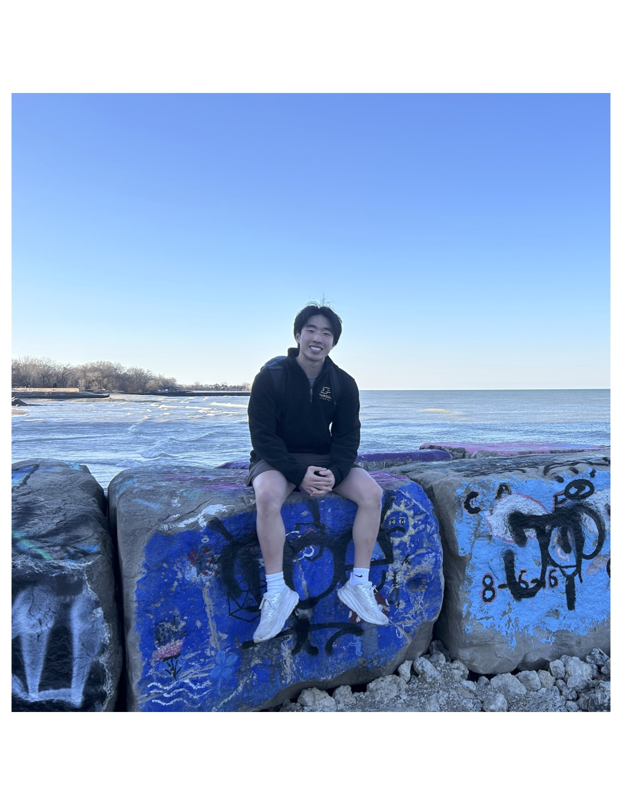

Data Science at Purdue University · Machine Learning · Predictive Modeling
📄 Download ResumeI am a Data Science student at Purdue University, graduating in Spring 2026 with a strong academic record and a focus on machine learning, predictive modeling, and applied analytics. The Data Science program at Purdue integrates computer science, statistics, and mathematics, providing rigorous training in both theory and practice. My coursework has included machine learning, data visualization, data structures and algorithms, and statistical programming, which have given me the tools to approach complex analytical problems with both creativity and precision.
My career goal is to become a data scientist who applies advanced statistical modeling and machine learning techniques to solve meaningful challenges in technology, business, and society. I am especially motivated by opportunities where data-driven insights can directly impact decisions and improve outcomes.
Beyond academics, I played competitive water polo, enjoy rock climbing, and train consistently in the gym. I am also passionate about cooking and food, experimenting with high protein meals and meal prep strategies. These interests keep me balanced and fuel my curiosity both inside and outside of data science.
John Deere · Aug 2025 – Present
BASF · Aug 2024 – May 2025
CourseKata Project · Mar 2024 – Jun 2024
📧 josephzou05@gmail.com · 🔗 LinkedIn · 💻 GitHub